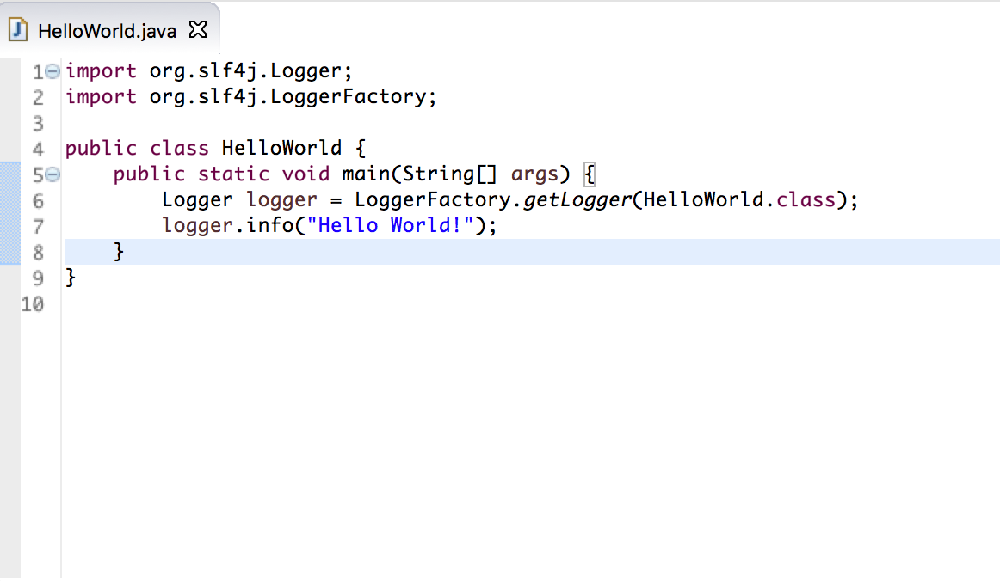
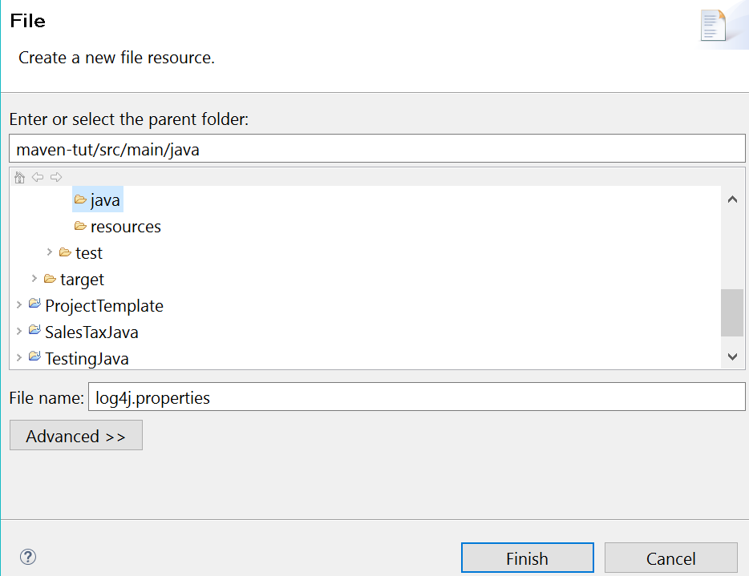

NOTE:
This secion for the tutorial was done on the Eclipse IDE integration. To use Maven on other IDE, plase refer to Apache Maven IDE Integration page for instructions.
If you are using Maven directly on the terminal, see: Tutorial: In the Terminal section.
$ Download and Install
In order to use Maven on Eclipse, you will need the following:
Once you have sucessfullly set up Java enviroment and Eclipse IDE, you can go ahead right click on the Help menu, and click on Eclipse Marketplace.

Search for Maven Integration for Eclipse (Luna and newer) plug-in. Click on the Install button to install Maven Intergration. Follow the instruction and restart Eclipse for new configuration.
$ Create your app
Create new Maven project
Like other Java projects, you can either import an existing Maven project or create a new project. In this section, we are building a new Hello World project in Maven.
First, click on File menu and select New->Project. Select Maven Project under Maven folder and click Next.

Select Create a simple project if you want to skip archetype selection. Otherwise, an archetype menu will pop up, in which you can choose which archetype you are using for the project. Like Java projects, you can either use the default workplace or specify the path for this project. Click on Next to set up names for the project.

A Maven project has two artifacts: Group Idand Artifact Id. Group Id is the name of your company/group that identifies your project uniquely across all projects, while Artifact Id is the name of the jar without version.
Maven provides users a detailed guide for naming conventions, but in this simple project we will just name Group Id as com.capstone.app and Artifact Id as maven-tut. Click Finish to generate a new Maven project.

Create java class
Navigate to maven-tut and right click on src/main/java under the project folder. Select New to create a new Java class. Name the class and click Finish.

Add code
Navigate to the Java file we just built and type code as below:

If we are using third-party libraries (like the sample code above), we have to add the dependency in POM file before compiling and building.
$ Compile your app
Compilation is one of the 23 different phases of the Maven default lifecycle.
Other phases include validation, testing, packaging, verification, installation,
and deployment. You can execute all of these phases at one time with Maven!
Before you execute the default lifecycle which will build your package, you should
verify your current packaging method in the POM file.
<packaging>jar</packaging>
Viable values for packaging include jar, war, ear, and pom. The default
is jar.
$ Run and test your app
Now that you are comfortable with the packaging method, the next step is to right
click on the project folder and click on Run As. From there, select Maven build.

You will be directed to an Edit Configuration window. In the goals field,
write package and then click on Run (You can specify additional goals
in your POM file).

Once the build completes, you will find your package file in the target folder of your
project directory.
There are multiple Maven commands within the Run As menu selection shown earlier.
For example, there is an option called Maven clean that will will remove all of the files created
during the previous build. This is a good action to take before rebuilding your project.
Additionally, there is an option called Maven test. Although the build option already includes testing,
this is a good action to take when you soley want to test without rebuilding your entire project.
Debugging with Log4j Plugin
The following section describes some additional information about using the Log4j Plugin.
Click here to skip to an overview of the POM File
Imagine that you've been working on a coding assignment for a couple of weeks, and
the day before its due, you discover a bug! Let's assume you were lazy and didn't write any
j-unit tests. What's the first thing you do?
One possible course of action is to discover where your program first stopped working by adding a ton of
print statements.
However, writing regular print statements is annoying because you eventually have to comment them all out or
delete them before you turn in your assignment. What if I told you that you could write print statements that
could appear or disappear on command.
Cue the Log4j Plugin, Apache's logging package for Java!
This plugin allows to use us to write logging statements with varying levels of priority. We can also turn off
these logging statements when they are not needed. Below are the steps to begin using this Plugin:
First off, there needs to be a dependency for log4j inside the POM file. Copy the dependency below
into your POM file between the dependencies tags.
<dependency>
<groupId> log4j </groupId>
<artifactId> log4j </artifactId>
<version> 1.2.17 </version>
</dependency>
Next, you will need to create a new log4j properties file. Right click on the src folder of your Maven project,
and navigate to New then File. Name your new file log4j.properties exactly as spelled here.

In your log4j.properties file, copy and paste the following code.
#Root logger option
log4j.rootLogger = FATAL, console
#Create appender for console
log4j.appender.console=org.apache.log4j.ConsoleAppender
log4j.appender.console.layout=org.apache.log4j.PatternLayout
The first couple of lines are specifying what level of logs that you want to see and where you would like to see them
outputted. NOTE: The logger will display all elements at the specified logging level and of higher priority.
The lines after that will initialize the console as an appender to the logger. It is possible to
use a file as an appender by replacing console with your file name and ConsoleAppender with FileAppender.
Now, create a new class in your maven-tut src folder called log4jDemo.java or something of that nature.
Replace the default code with the code below.
import org.apache.log4j.Logger;
public class Log4jDemo {
//Initialize logger
static Logger log = Logger.getLogger(HelloWorld.class);
public static void main(String[] args) {
/*Declare different levels of logging messages in order of highest
priority to lowest priority*/
log.fatal("This is a fatal message.");
log.error("This is an error message.");
log.warn("This is a warning message.");
log.info("This is an info message.");
log.debug("This is a debug message.");
log.trace("This is a trace message.");
}
}
If your run this file, you will see that only the fatal message prints. This is because you
specified FATAL on your log4j.properties file.
Try changing the log level on your properties file and rerunning. You will see that log messages of
this priority level and higher are printed.
If you would like to see all of the messages, use ALL in the properties file.
Similarily, if you would like to see none of the messages, use OFF in the properties
file.
That covers the basic gist of log4j. Learn more at
http://logging.apache.org/log4j/2.x/